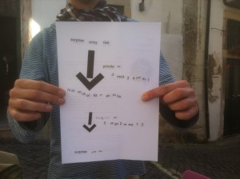

I immediately had a decentralized crush on the Lisbon event. In the spirit of the event, Pierre picked up the template over on our live wiki and ran with it – when I asked him if he needed any help, he enthusiastically told me he was excited but set. We did a checkin call recently to followup and see where they’re going from here.
I work for a startup called Seedrs, been doing devops for almost two years. We are the first equity crowd funding platform in Europe. Interested in internet freedom! Really like the initiative, wanted to organize one. Found out about it through twitter somewhere. Found the description, said “let’s do it.”
To make for an accessible introductory activity, they started with by making DiscoSoupe. Everyone brings vegetables, chops and cooks, and then eats together. I love this, as an alternative to the usual “go out for a drink after.”
The 15 gathered activists and hackers stood at a chalkboard in the street of the ancient district of Alfama in Lisbon as they did knoweldge shares around what the internet is, differences between circuit switching and packet switching. They were interested to understand protocol, IP, and public key / private key for encrypting communication. Passersby and tourists asked questions questions, shared a lot. Did Workshop : Name That Tech (where the picture is from)
{kind=link}
Pierre, the organizer, really liked having a pre-set workshop (Name That Tech!) so he could spend more time on gathering people and the organizing. They’re excited to be a part of a larger community focused on these topics, and their next gathering will be based on doing as well as knowing, with a CryptoParty happening 15th of April: event link